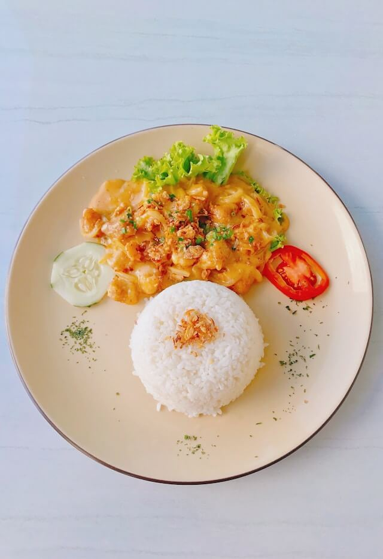

Sauté Aromatics: Finely dice the onion, carrot, and celery (this is called a soffritto). Heat olive oil in a large, heavy-bottomed pot or Dutch oven over medium heat. Add the diced vegetables and cook, stirring occasionally, until softened, about 5-7 minutes. Add minced garlic and cook for another minute until fragrant.
Brown Meat: Add the ground meat to the pot. Break it apart with a spoon and cook, stirring, until it's browned all over. Drain off any excess fat if necessary.
Deglaze & Add Tomatoes: If using red wine, pour it into the pot and scrape up any browned bits from the bottom. Let the wine simmer and reduce by about half. Stir in the crushed tomatoes. Season with salt and pepper.
Simmer Sauce: Bring the sauce to a gentle simmer. Reduce the heat to low, cover the pot, and let it cook for at least 30-45 minutes, or ideally 1-2 hours if you have the time, stirring occasionally. The longer it simmers, the more flavorful it will become.
Cook Pasta: About 15 minutes before the sauce is ready, bring a large pot of generously salted water to a rolling boil. Add the pappardelle pasta and cook according to package directions until al dente (still slightly firm to the bite).
Combine & Serve: Reserve about 1 cup of the pasta cooking water, then drain the pasta. Add the drained pasta directly to the pot with the meat sauce. Toss everything together to coat the pasta well. If the sauce seems too thick, add a splash or two of the reserved pasta water to reach your desired consistency.
Garnish & Enjoy: Serve immediately in bowls, garnished with freshly chopped parsley and a generous grating of Parmesan cheese.
Apple pie
Ingredients
Apples (e.g., Granny Smith, Honeycrisp, or a mix)
Pie crust (for a double-crust pie)
Sugar (granulated and/or brown)
All-purpose flour (for filling and crust)
Butter (cold, for crust and/or filling)
Cinnamon
Nutmeg (optional)
Lemon juice (optional, to prevent browning)
Salt
Egg (for egg wash, optional)
Preparation
Prepare Pie Crust: If making from scratch, combine flour, salt, and cold cubed butter until crumbly. Gradually add ice water until dough just comes together. Divide in half, flatten into discs, wrap, and chill for at least 30 minutes. (Alternatively, use store-bought refrigerated pie crusts.)
Make Apple Filling: Peel, core, and slice the apples (about 1/4 to 1/2 inch thick). In a large bowl, toss the apple slices with sugar, flour, cinnamon, nutmeg (if using), and a pinch of salt. Add a squeeze of lemon juice if desired to prevent browning and add a bit of tartness. You can also dot the top of the filling with small pieces of butter before adding the top crust.
Assemble Bottom Crust: Preheat your oven (typically around 375-425°F or 190-220°C, check your specific recipe). On a lightly floured surface, roll out one disc of pie dough into a circle about 12 inches in diameter. Carefully transfer it to a 9-inch pie plate. Trim the edges, leaving about a 1-inch overhang.
Add Filling: Pour the apple filling into the pie crust-lined plate, mounding it slightly in the center.
Create Lattice Top: Roll out the second disc of pie dough. Cut it into even strips (about 3/4 to 1 inch wide). Lay half the strips evenly spaced across the top of the filling. Fold back every other strip. Place a perpendicular strip in the center. Unfold the folded strips. Now fold back the alternate strips (the ones you didn't fold before) and lay another perpendicular strip. Continue this weaving process until the top is covered in a lattice pattern.
Crimp Edges: Trim the lattice strips even with the bottom crust overhang. Fold the overhang over the ends of the lattice strips and crimp the edges decoratively (e.g., with a fork or your fingers).
Egg Wash (Optional) & Bake: For a golden, shiny crust, whisk an egg with a tablespoon of water or milk and brush it lightly over the lattice and edges. You can also sprinkle with a little extra sugar. Place the pie on a baking sheet (to catch any drips).
Bake: Bake for about 45-60 minutes, or until the crust is golden brown and the filling is bubbly. You may need to cover the edges of the crust with foil partway through baking if they start to brown too quickly.
Cool: Let the pie cool on a wire rack for at least 2-3 hours before slicing and serving. This allows the filling to set properly. Enjoy!
Chicken and rice

Ingredients
Chicken breast or boneless fish fillet
Salted egg yolks
Butter
Evaporated milk (or fresh milk/cream)
Garlic
Curry leaves (optional, but common)
Chili padi/bird's eye chili (optional, for spice)
Cornstarch (for coating)
Sugar
Cooking oil
Cooked white rice
Lettuce, cucumber, tomato (for garnish)
Fried shallots/garlic (for garnish)
Chopped spring onions (for garnish)
Preparation
Prepare the Protein: Cut chicken or fish into bite-sized pieces. Marinate briefly with a pinch of salt and pepper. Coat the pieces evenly with cornstarch.
Fry the Protein: Heat cooking oil in a wok or pan. Deep fry or pan-fry the coated chicken/fish pieces until golden brown and cooked through. Remove and drain on paper towels.
Prepare Salted Egg Yolks: Steam the salted egg yolks for about 5-7 minutes until cooked. Mash them thoroughly with a fork.
Make the Sauce: In a clean wok or pan, melt the butter over low-medium heat. Add minced garlic, chopped chili (if using), and curry leaves (if using). Sauté until fragrant (be careful not to burn the garlic).
Incorporate Yolks & Milk: Add the mashed salted egg yolks to the pan. Stir constantly until the mixture becomes foamy and bubbly. Gradually pour in the evaporated milk, stirring continuously. Add a pinch of sugar to balance the flavors. Let the sauce simmer and thicken slightly.
Combine & Coat: Add the fried chicken/fish pieces back into the wok with the sauce. Gently toss everything together until the chicken/fish is well-coated with the creamy salted egg yolk sauce.
Serve: Serve the salted egg yolk chicken/fish immediately alongside a mound of hot cooked white rice. Garnish with fresh lettuce, slices of cucumber and tomato, a sprinkle of fried shallots/garlic, and chopped spring onions.
Tomato Soup
Ingredients
Red bell peppers
Tomatoes (canned diced or fresh ripe)
Onion
Garlic
Vegetable broth
Olive oil
Cream (heavy cream, coconut cream, or plain yogurt for swirl)
Salt & Pepper
Fresh parsley (or cilantro, for garnish)
Pumpkin seeds (pepitas, for garnish)
Smoked paprika (optional, for depth)
Preparation
Roast Vegetables: Preheat oven (around 400°F/200°C). Halve bell peppers, remove seeds and membranes. You can also roughly chop an onion. Toss peppers (and onion if roasting) with a little olive oil, salt, and pepper. Roast on a baking sheet until softened and slightly charred (about 20-30 minutes). If using fresh tomatoes, you can roast them alongside.
Sauté Aromatics: While peppers roast (or if you didn't roast onion), heat a tablespoon of olive oil in a large pot or Dutch oven over medium heat. Add chopped onion (if not roasted) and cook until softened, about 5-7 minutes. Add minced garlic and cook for another minute until fragrant.
Combine & Simmer: Once roasted, roughly chop the bell peppers (you can peel them if desired after roasting, once cool enough to handle). Add the roasted peppers, tomatoes (canned or roasted), and vegetable broth to the pot. Add smoked paprika if using. Bring to a simmer, then reduce heat and cook for 10-15 minutes to allow flavors to meld.
Blend Soup: Carefully transfer the soup to a blender (or use an immersion blender directly in the pot) and blend until smooth and creamy. If using a standard blender, work in batches and be cautious with hot liquids.
Add Cream & Season: Return the blended soup to the pot if necessary. Stir in the cream (or coconut cream for a vegan option). Heat through gently, but do not boil. Taste and adjust seasoning with salt and pepper as needed.
Serve & Garnish: Ladle the hot soup into bowls. Garnish with a swirl of extra cream or yogurt, a sprinkle of pumpkin seeds, freshly chopped parsley (or cilantro), and a crack of black pepper. Enjoy!